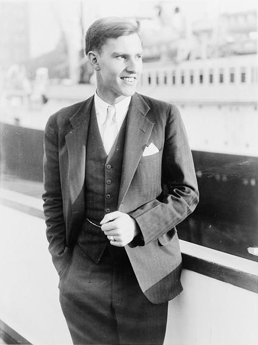

List of Important People, Places, and Things mentioned in Paul Siple's Letter to Mr.
Behrend
- Ernst Behrend
- President of the Hammermill Paper Company. Lent a sextant to Paul Siple for use in
his Antarctic expedition.
- Paul Siple
- Leader/Biologist
- American Antarctic explorer. Participated in all 5 expeditions conducted by Admiral
Byrd.
-
Paul Siple in 1932
- Richard Byrd
- Admiral
- American naval officer and Antarctic explorer. Admiral Byrd conducted 5 Antarctic
expeditions between 1928 and 1956.
- Alton Wade
- Geologist
- Franklin Alton Wade was an American geologist who accompanied Admiral Richard Byrd
on two Antarctic expeditions.
- Olin Stancliff
- Driver/Assistant
- Part of Admiral Byrd's Antarctic sledging party. Olin Stancliff primarily served as
a dog driver. Little other information is available.
- Stevenson Corey
- Driver/Assistant
- A supply officer on Admiral Byrd's Antarctic expedition team. He also served as a
dog driver along with Olin Stancliff.
- Marie Byrd Land
- Unclaimed region of Antarctica. Named after the wife of Admiral Richard E. Byrd.
- Between 158°00'W and 103°24'W
- Little America
- A series of bases established in Antarctica by Admiral Byrd.
- 78°12′S 162°12′W
- Mt. Raymond Fosdick
- A mountain located in the Fosdick Mountain Range in Marie Byrd Land.
- 76°32′S 144°45′W
- Edsel Ford Mountain Range
- The mountain range containing Mt Raymond Fosdick
- Sextant
- An instrument used in celestial navigation used to measure the distance between two
visible objects.